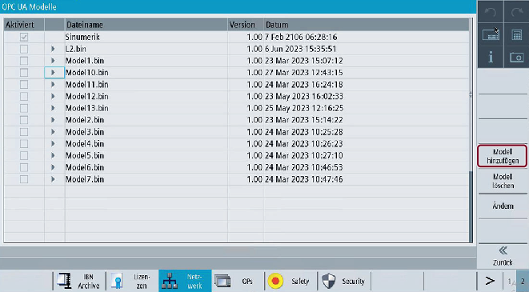
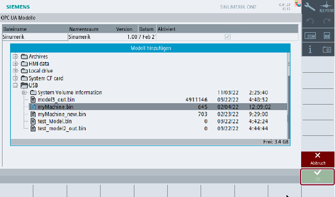

| Hinweis |
|
Die Option "Modell hinzufügen" ist mit Benutzerzugriffsrechten sichtbar, doch es sind Herstellerzugriffsrechte erforderlich, um Modelle hinzuzufügen. |
Zum Hinzufügen eines oder mehrerer kundenspezifischer Objektmodelle drücken Sie den Softkey "Modell hinzufügen".
Softkey "Modell hinzufügen"
Die Popup-Maske "Modell hinzufügen" wird angezeigt.
Wählen Sie die binäre(n) Datei(en) im SINUMERIK-Dateisystem aus.
OPC-UA-Modelle hinzufügen
Klicken Sie auf "OK", um die ausgewählte(n) binär(e) Datei(en) hinzuzufügen.
Wenn Sie den Softkey "Abbruch" drücken, kehren Sie zum Bildschirm "OPC UA-Modelle" zurück.